女子テニス部 三冠達成

◎令和７年２月８日(土)、
岡山県・備前テニスセンターで開催された、
第２回西日本公立高等学校テニス大会に、
２年連続で近畿地区の代表として出場し、
優勝しました。
これで、京都府大会、近畿大会、西日本大会の
三冠を達成しました。
最強寒波でコートが凍り付き、積雪もある中、
コート整備に尽力してくださった大会役員の皆様、
岡山県各校テニス部の顧問の皆様、部員の皆様、
大変お世話になりました。
○対戦結果 ２Ｒ 山城 ４１ 岡山城東
準決勝 山城 ３２ 加古川北
決勝 山城 ４１ 松江東
 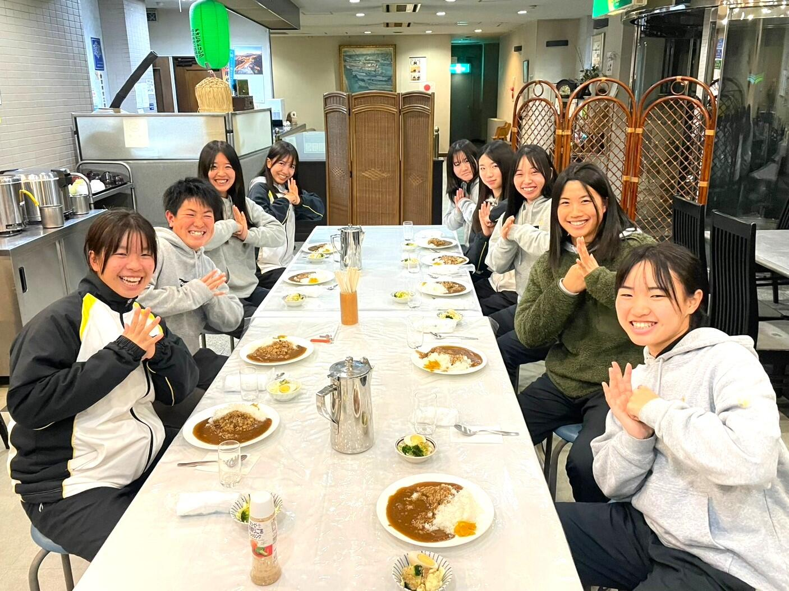
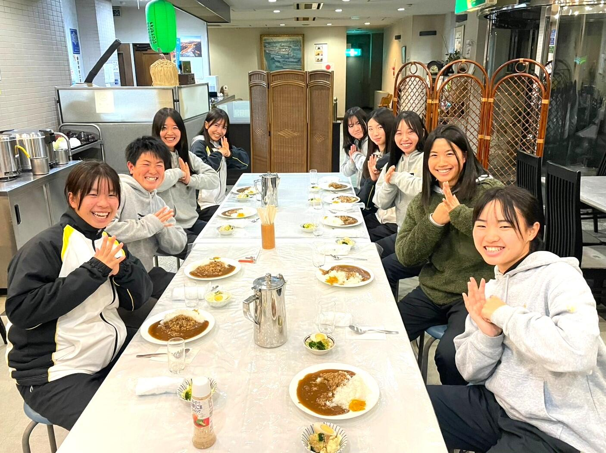
 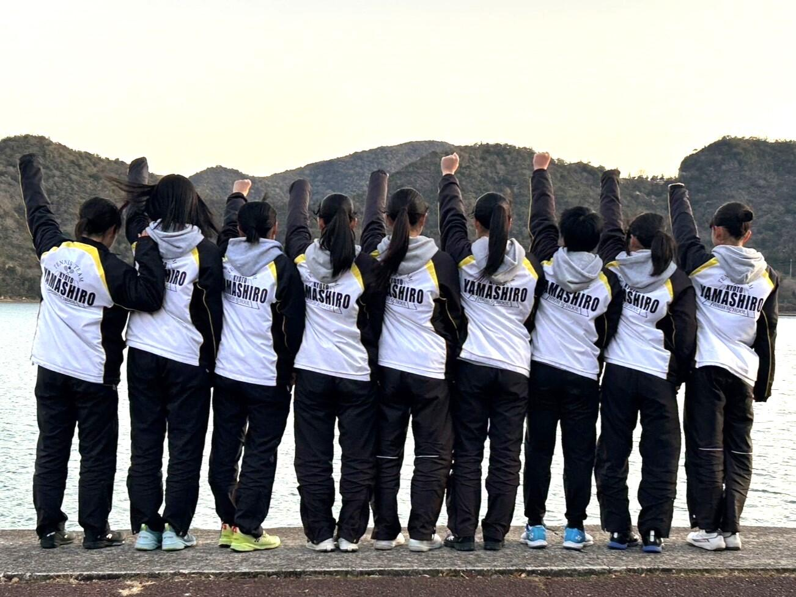
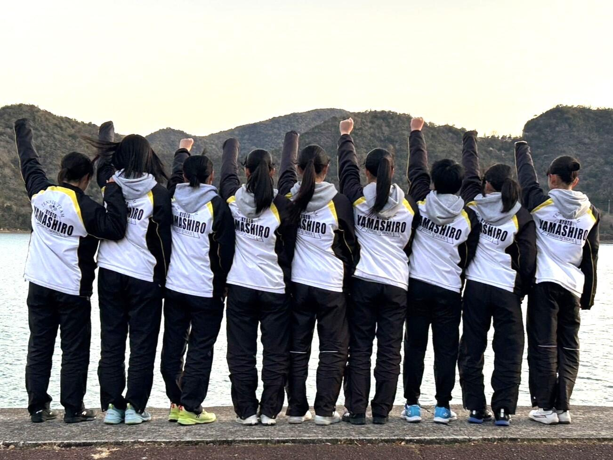
 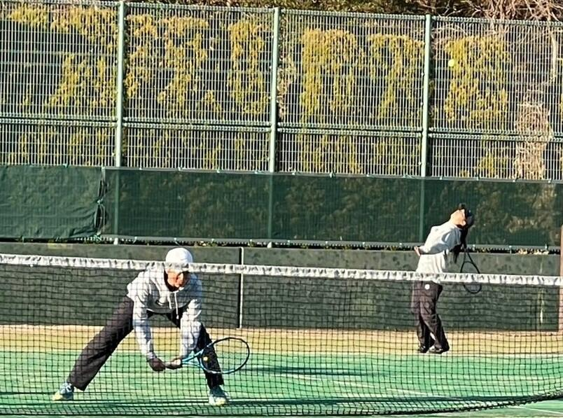
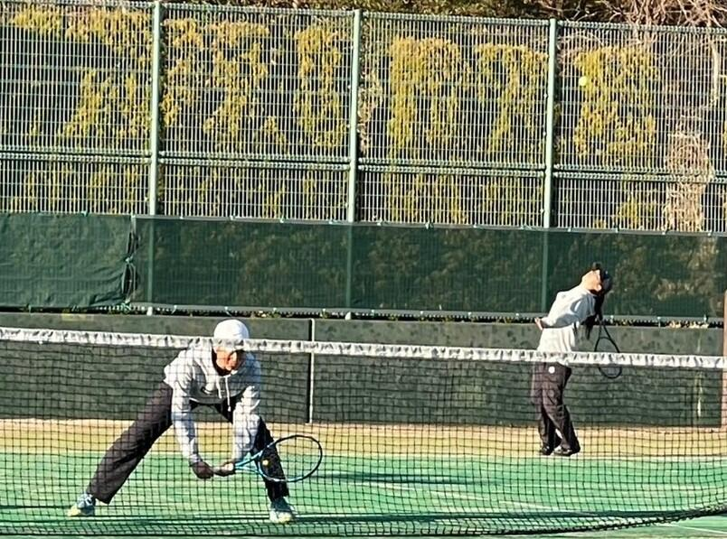
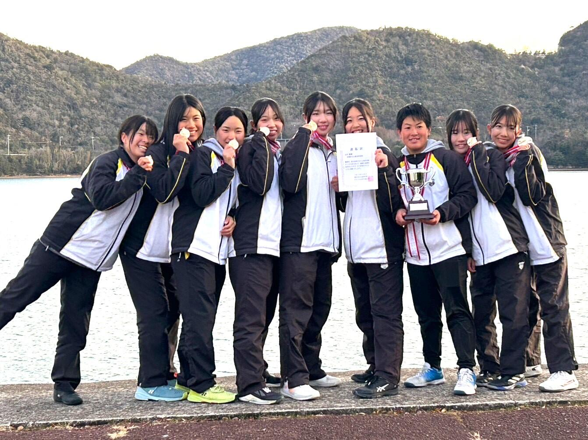 


◎近畿公立高等学校テニス大会個人の部 ６名出場
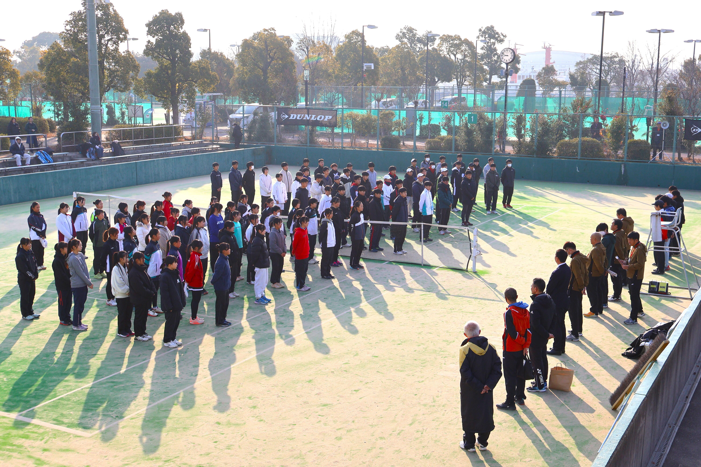
令和７年２月１日(土)、
大阪市、マリンテニスパーク北村で開催された、
2024年度第13回近畿公立高等学校テニス大会個人の部に、
本校から、過去最多の６名が出場しました。
前日夜、桜宮高校で練習させていただき、
温泉で英気を養って戦いに臨みました。
○戦績 １Ｒ 田口 友菜(１年) ３６ 大阪･八尾(２年)
常塚 侑花(１年) ６２ 大阪･八尾(２年)
２Ｒ 田中 心(２年) ５７ 兵庫･三木北(２年)
常塚 侑花(１年) ４６ 兵庫･宝塚西(２年)
内海 紗希(２年) ６１ 滋賀･国際情報(１年)
夜久かのん(２年) ６１ 大阪･山田(２年)
松岡 明里(１年) ６４ 兵庫･伊丹西(１年)
３Ｒ 内海 紗希(２年) ３６ 奈良･高取国際(１年).........ベスト16
夜久かのん(２年) ６２ 滋賀･膳所(２年)
松岡 明里(１年) ７５ 兵庫･三田祥雲館(２年)
準々決勝 夜久かのん(２年) ２６ 兵庫･兵庫(１年)...............ベスト８
松岡 明里(１年) ５７ 兵庫･神戸鈴蘭台(１年)......ベスト８
ｺﾝｿﾚｰｼｮﾝ 田口 友菜(１年) ２６ 和歌山･和歌山商業(２年)
常塚 侑花(１年) ６３ 和歌山･和歌山商業(２年)
田中 心(２年) ６３ 大阪･八尾(２年)
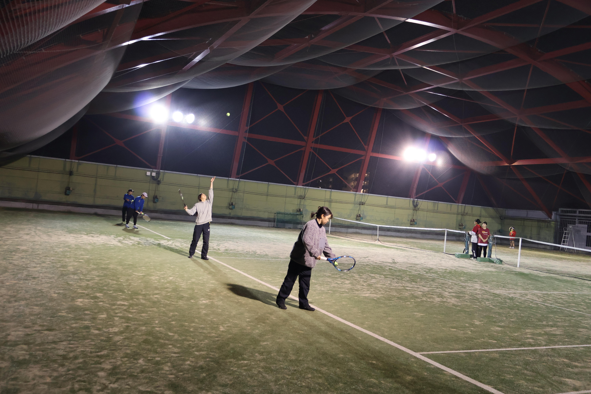 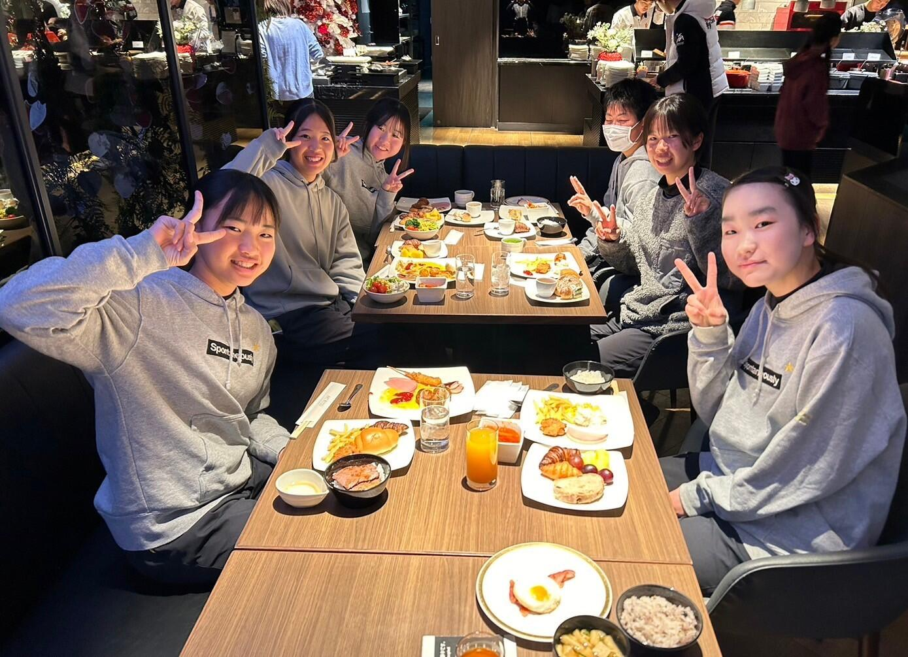


 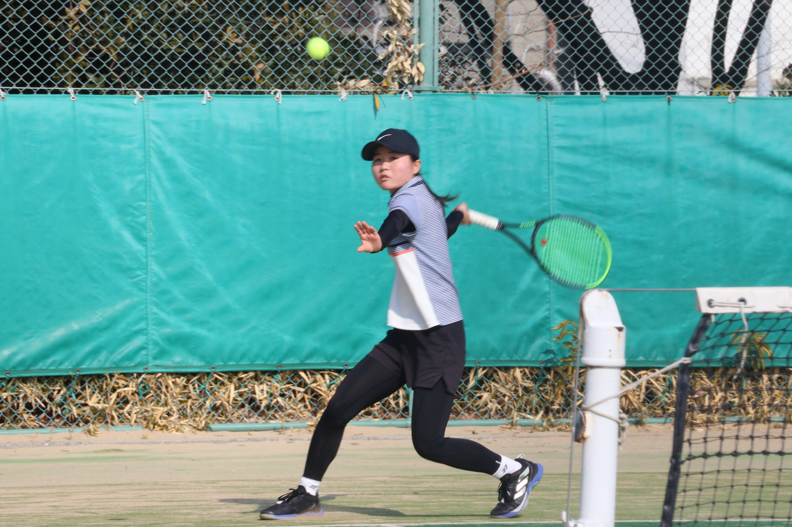
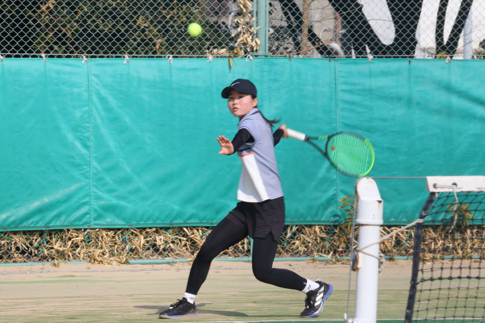
 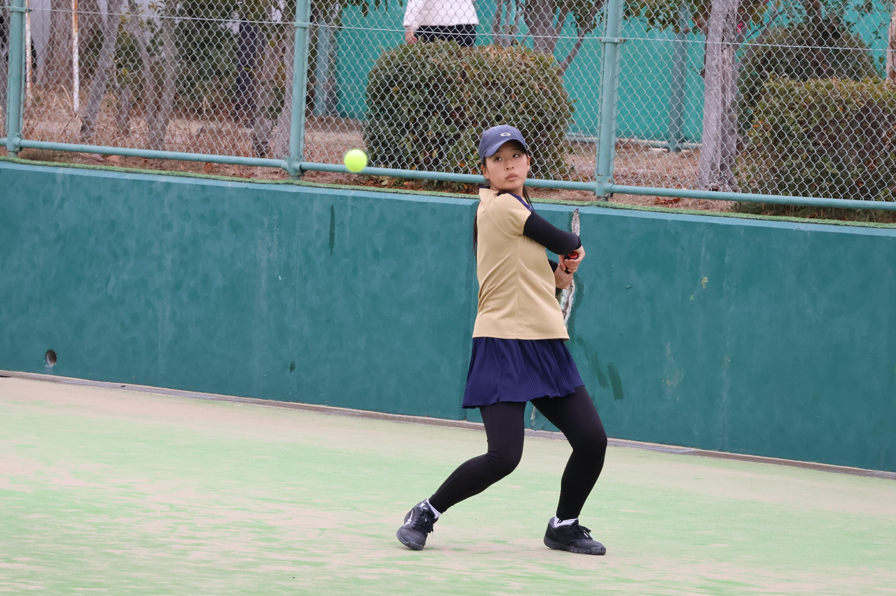
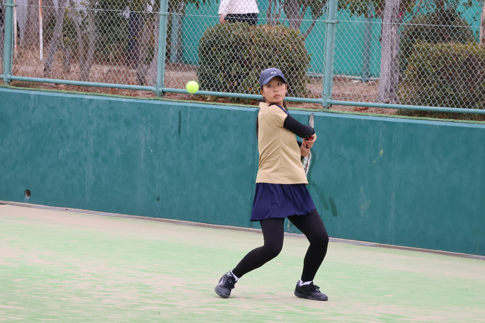
第48回京都府公立高等学校卓球大会 試合結果
第48回京都府公立高等学校卓球大会の個人戦、団体戦が終わりました。
山城高校卓球部は以下の優秀な成績を収めました。
【個人の部】 1月13日(月・祝) 於：向日市民体育館
引地春(2年) 男子シングルス準優勝
【男子団体の部】 2月2日(日) 於：山城高校、2月23日(日) 於：鳥羽高校
予選ブロック第２位、決勝トーナメント進出
【女子団体の部】 2月9日(日) 於：山城高校、2月22日(土) 於：鳥羽高校
予選ブロック第２位、決勝トーナメント第３位入賞
今年度の公式戦は公立校大会で終わりとなりますが、今後も近畿大会出場を目標として、個々のレベルアップに励んでいきます。来年度もぜひ応援よろしくお願いします。
第97回選抜高等学校野球大会21世紀枠 選考結果
１月２４日（金）第97回選抜高等学校野球大会21世紀枠の最終選考が行われました。
残念ながら21世紀枠の２校に選ばれることは叶わず、補欠１となりました。
この決定までの間、地域の方々、ＯＢの方々、保護者の方々たくさんの方々から激励をいただき、
また当日、たくさんのメディア、報道の方々が集まっていただきました。また、たくさんの記事等山城高校を取り上げていただき,感謝申し上げます。
今回選抜への選出は叶いませんでしたが、選手たちは改めて山城高校について、また、野球について考える機会となりました。
選手一同、気を引き締め直し、今度は、自力で甲子園をつかみたいと思っています。
今後とも応援よろしくお願いいたします。
ありがとうございました。
ダンス部 バトル大会への挑戦
ダンスバトルとは、DJが選曲した音楽に合わせて即興で踊る競技で、選手たちはその場で曲のイメージを素早くつかみ、表現する力が求められます。自由に踊ることこそがバトルの魅力であり、チームメンバーたちは普段の練習を通じて、その楽しさを深く体感してきました。
初めはフリー（即興ダンス）に自信がなかった部員も多かったですが、仲間と一緒に楽しく切磋琢磨するうちに、個々の表現力が飛躍的に向上しました。自分らしさを存分に発揮できるようになり、バトルの舞台でもその成長を感じさせてくれる場面が多く見られました。楽しみながら努力することができるこの９人だからこそ、このメンバーの前でなら思い切り楽しんで自分を表現できる、という日々の練習の中での心の安心がすべてに繋がったと考えています。
そして、第9回高校生ダンスバトル選手権 関西予選では、「diaster」が見事に勝ち進み、2025年1月18日（土）に川崎CLUB CITTA'で行われた決勝に出場しました。決勝の舞台に立つことができたのは、日々の努力とチームの団結力が実を結んだ証です。応援してくださった皆様の支えにも感謝の気持ちでいっぱいです。
この過程を通して、チーム全員が大きく成長し、技術だけでなく、お互いを支え合う絆も強まりました。大会を通じて新たな発見があり、次のステップに向けての意欲も高まっています。これからもさらなるレベルアップを目指し、新たな挑戦に立ち向かっていきます。
応援してくださる皆様に感謝の気持ちを込めて、引き続き応援をよろしくお願いいたします！次の大会でも、これまで以上に素晴らしいパフォーマンスをお見せできるように頑張ります。


斎藤 佑樹氏「未来のメッセージ」（バーチャル野球）、山城高校来校！
{kind=link}
{kind=link}
{kind=link}
{kind=link}
{kind=link}
２０２４年１２月バーチャル高校野球「未来へのメッセージ」の撮影のため、斎藤佑樹氏が来校されました。
キャリーケースを片手にさっそうと校門から入ってこられ、気さくに挨拶をしていただきました。
本校は、昔から変わらない伝統のユニフォームを着用し、全国で１５校しかない第１回から夏の地方大会に出場する皆勤校であります。また今回２０２５年の選抜２１世紀枠候補に挙がり、現在近畿の代表校となり吉報を待っています。文武両道を掲げ、勉強と野球の両立を生徒たちは頑張っている本校に関心を持っていただき、今回の訪問が実現されました。
詳しい内容は、ぜひ配信動画の方をご覧ください。
バーチャル高校野球 斎藤佑樹氏
「未来へのメッセージ」山城（京都）
斎藤佑樹「未来へのメッセージ」山城（京都） | 斎藤佑樹「未来へのメッセージ」 | バーチャル高校野球 | スポーツブル (スポブル)
https://vk.sportsbull.jp/koshien/video/abc/saito_yuki/koya104_saito_yuki_64.html
試合成績
女子テニス部 近畿公立高等学校テニス大会 優勝

◎令和７年１月６日(月) 和歌山市つつじが丘テニスコートで開催された、
令和６年度第22回近畿公立高等学校テニス大会団体の部において、
初優勝を遂げました。
京都府として初めて、
山城高校１５回目の挑戦にしてようやく悲願を達成しました。
ここまで女子テニス部を築き上げて来てくださった歴代の先輩方、
保護者の皆様、練習試合をしてくださった各校テニス部の皆様、
ご支援、ご協力、ありがとうございました。
この結果により、２月に岡山県で開催される、
第２回西日本公立高等学校大会でも、
優勝を目指して頑張ります。
・対戦結果 予選１Ｒ 山城 ４１ 三田祥雲館(兵庫)
予選２Ｒ 山城 ３０ 国際情報(滋賀)
決勝１Ｒ 山城 ３１ 東大津(滋賀)
準決勝 山城 ３０ 加古川北(兵庫)
決勝 山城 ３１ 兵庫(兵庫)
・団体メンバー(登録順)
内海 紗希(２年) 常塚 侑花(１年) 松岡 明里(１年)
夜久かのん(２年) 田中 心(２年) 山中陽菜乃(１年)
福田 皐(２年) 増田 陽香(２年) 水津 渚(２年)


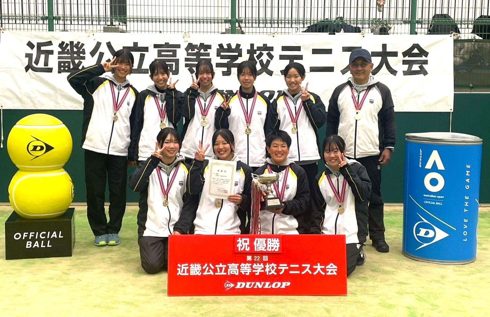


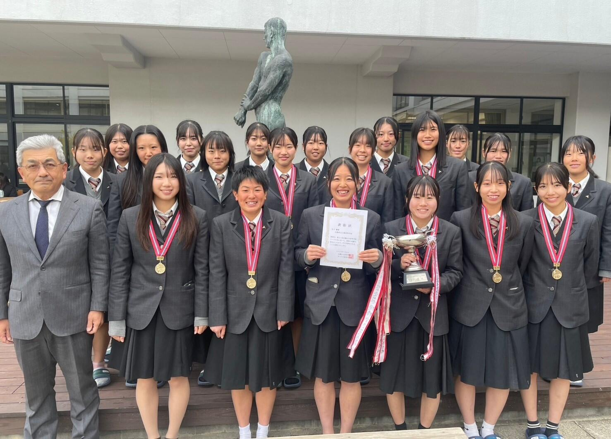
◎京都招待テニス大会 出場
令和６年12月21日(土)･22日(日)に、
宇治市 山城総合運動公園テニスコートで開催された、
令和６年度京都招待テニス選手権大会(団体の部･個人の部)に、
京都府の代表として出場しました。
残念ながら入賞は果たせませんでしたが、
貴重な経験となりました。
・対戦結果(団体の部)
１Ｒ 山城 １２ 雲雀丘学園(兵庫)
ｺﾝｿﾚｰｼｮﾝ 山城 ２１ 大阪女学院(大阪)
山城 ２１ 京都橘(京都)
・対戦結果(個人の部シングルス)
１Ｒ 田中 心(２年) ２６ 啓明学院(１年･兵庫)
常塚 侑花(１年) ２６ 近大和歌山(２年･和歌山)
ｺﾝｿﾚｰｼｮﾝ 田中 心(２年) ２４ 膳所(２年･滋賀)
常塚 侑花(１年) １４ 奈良学園(１年･奈良)
・対戦結果(個人の部ダブルス)
１Ｒ 内海(２年)松岡(１年) ７６(1) 近大和歌山(2.1年･和歌山)
２Ｒ 内海(２年)松岡(１年) ４６ 大阪女学院(2.1年･大阪)
ｺﾝｿﾚｰｼｮﾝ 内海(２年)松岡(１年) ４１ 啓明学院(2.2年･兵庫)
◎冬期合宿(12月７～８日 １泊２日 和歌山市つつじが丘テニスコート)
例年通り、冬期の遠征･合宿を実施し、和歌山県の公立･私立の高校と
練習試合を行いました。
７日 対戦校：桐蔭・和歌山商業・田辺・海南
８日 対戦校：近大和歌山
各校顧問の先生方、選手・会場の手配から試合の運営まで、
大変お世話になりました。ありがとうございました。


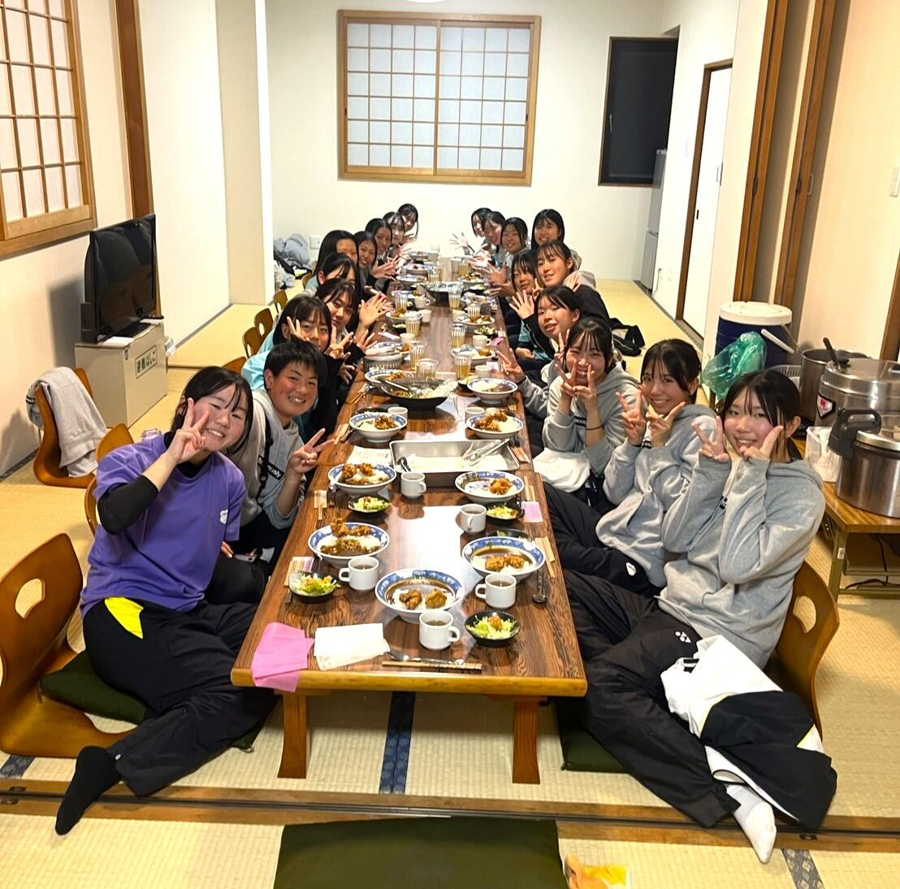
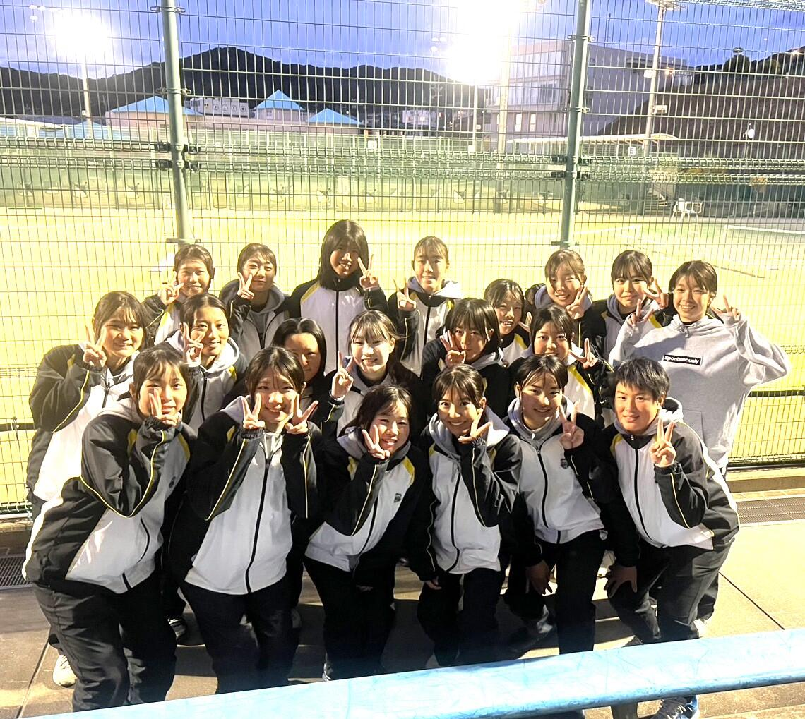
◎その他の活動
・令和７年１月３日(金) 初打ち・初詣
新年初打ちの後、例年の行事として、学校の近くの、
大将軍八神社に参詣し、優勝を祈願しました。
(部員の行いが良かったのか、願いは聞き入れて頂きました。)

・令和６年12月26日(木) 練習試合(団体戦形式)
対戦校：京都橘・中京大中京・桑名西・国際情報・立命館宇治
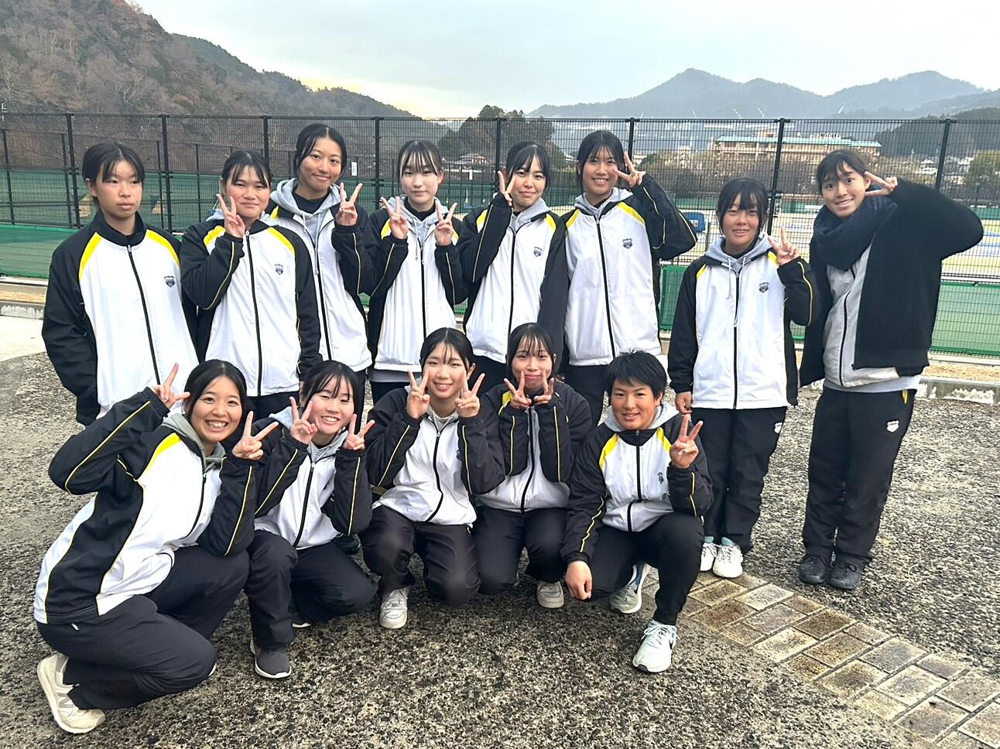
・令和６年12月15日(日) 練習試合
対戦校：桜宮高等学校

ニューイヤーコンサート
{kind=link}
{kind=link}
{kind=link}
第97回選抜高等学校野球大会21世紀枠推薦近畿代表校表彰式
{kind=link}
{kind=link}
{kind=link}
{kind=link}
{kind=link}
{kind=link}
{kind=link}
{kind=link}
カテゴリ一覧
主要リンク